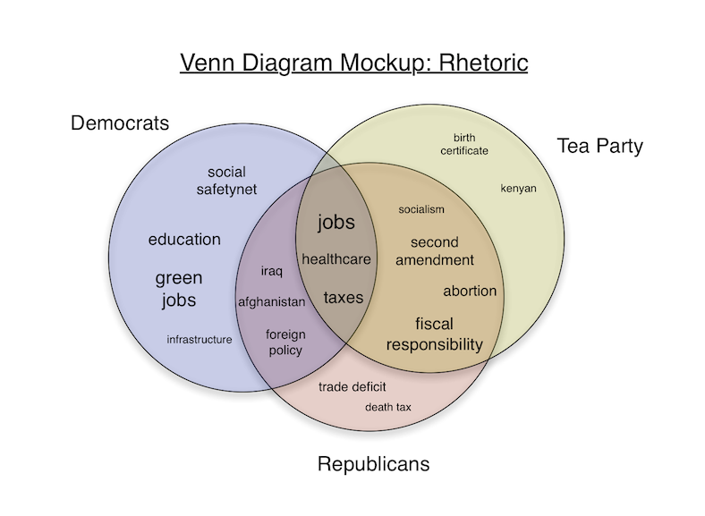
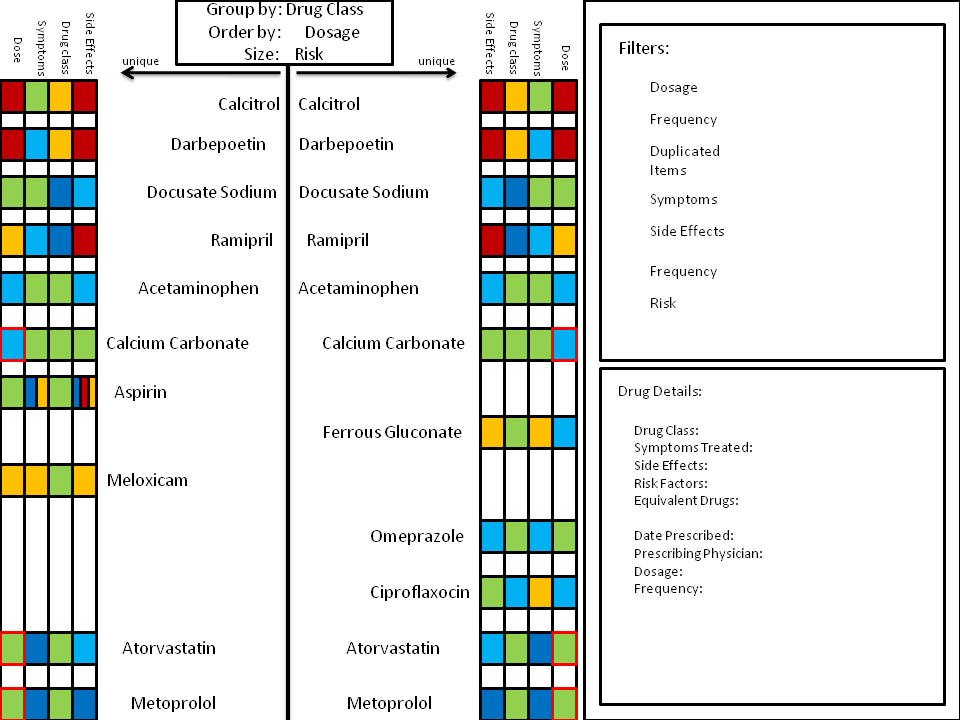
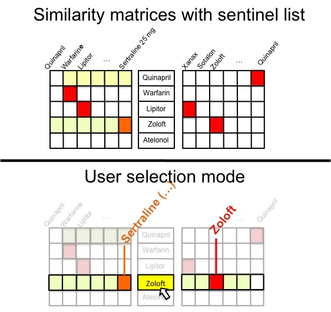
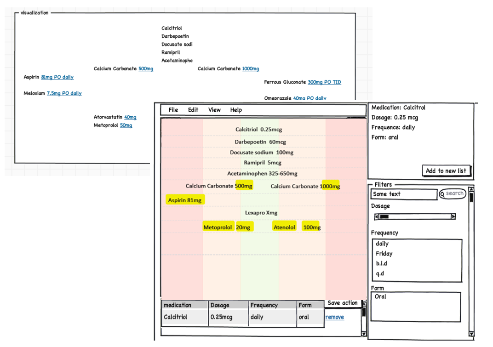
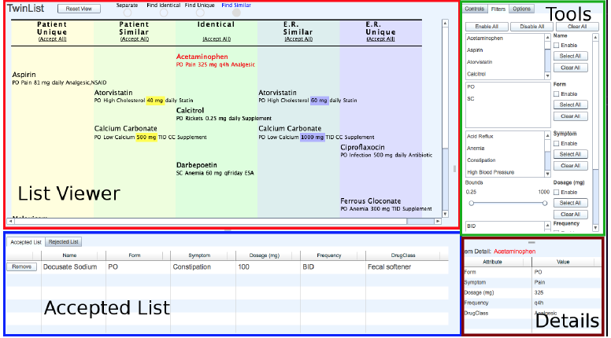
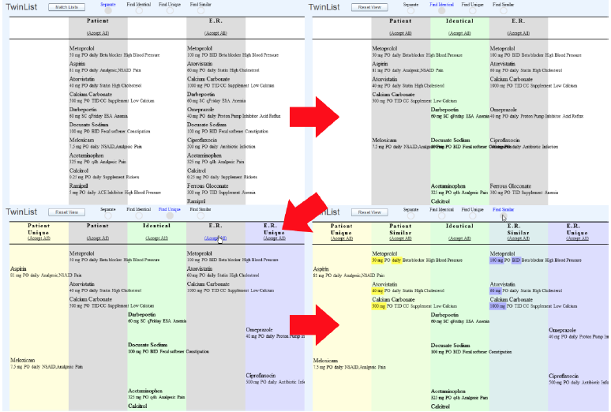

Facilitate medication reconciliation with animation and spatial layout
This project started as a class project for Information Visualization, and turned into a-year long research project. We were presented with the problem of Medication Reconciliation. My talented teammates and I came up with this idea, and built a prototype. Later on, this project is handed over to Tiffany Chao who made the idea into a polished product.
Medication Reconciliation is the process of comparing a patient’s medication orders to all the medications that the patient has been taking. The reconciliation is done to avoid medication errors such as omissions, duplications, dosing errors, or drug interactions1.
1. The Joint Commission. Medication reconciliation. sentinel event alert. 2006.
Goal Design a prototype for physicians to perform medication reconciliation quickly and accurately.
Client Catherine Plaisant. Research Scientist at University of Maryland
My contribution Ideate, UX design, Prototype and Usability Testing. Work in a team of 5.
Challenges- Physician A. Z. H. Stated during our usability study session
This is a 2-minute video showing the features and animations for Twinlist.
We started the project by learning how medication reconciliation is done in the real life. We interviewed our client Catherine who described the process simply: the physician will first merge the two lists of drugs into one, sort in alphabetical order, manually examine each drug item and its dosage, and then determine whether to keep it or reject it. The final output is a list of drugs to prescribe to the patient.
After we analyzed this scenario, we determined that it will simplify the process significantly if the tool showed users the difference and similarity of the two lists.
We started by exploring broader ideas and then narrowed it down to three possible solutions. We itemized the pros and cons for each solution.
  We used the “five-second evaluation” technique to get rapid feedback. Based on this feedback we refined our design and further communicated with our client. Lo-fi mockups were used to present our idea. After multiple iterations, we created the final wireframe.
Because our visualization is mainly based on animation to help users learn the similarity and difference of two lists, we developed a flash prototype to further demonstrate our idea.
 We conducted four sets of usability testing, two of which were with physicians. We asked the two physicians to perform medication reconciliation on two synthetic drug lists using Twinlist. We then modified the prototype based on some insights we learned from the users.
The final product as you have seen in the video is built by Tiffany Chao based on our Flash prototype.
1. Break complicated changes into small comprehensible steps. Show animated transitions for each step so user can follow.
2. In our initial approach, we changed the spatial location for list items. This sudden movement was less than optimal when presented to users. Almost all of the users were confused by what happened. We then animated the transition, but the result didn’t get much better because all the items moved at the same time. Finally, we broke up the animation into steps, which ended up being our winning strategy.
Want to chat about something? I do too!
You can drop me a line at ranliudesign at gmail dot com.